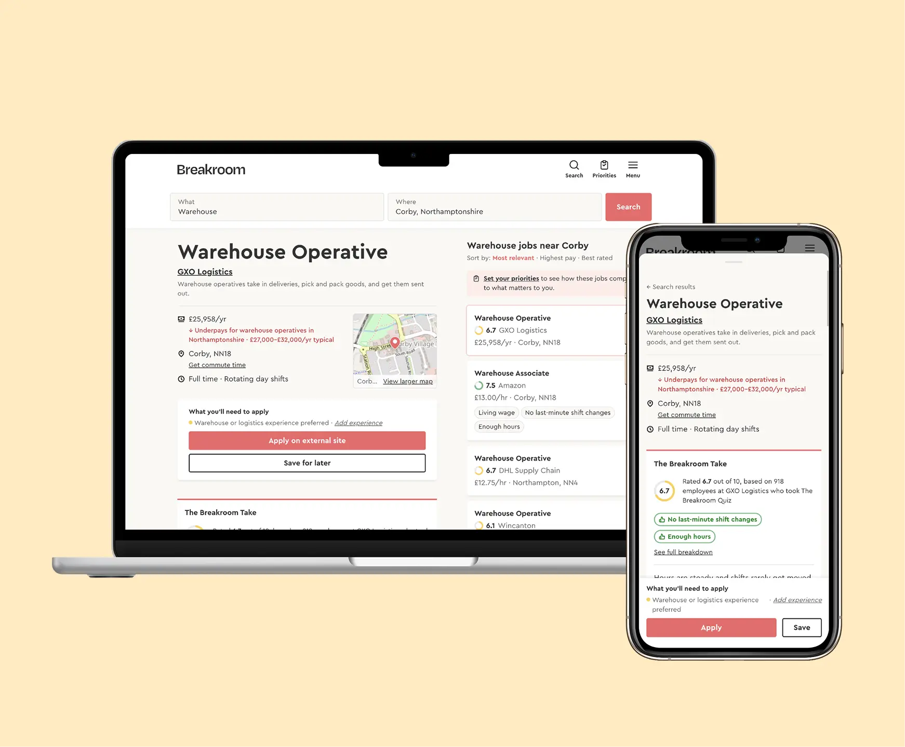
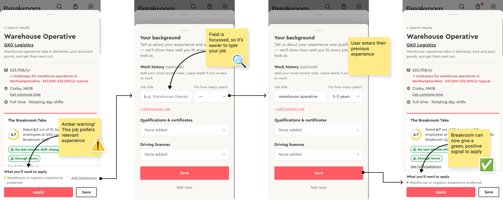
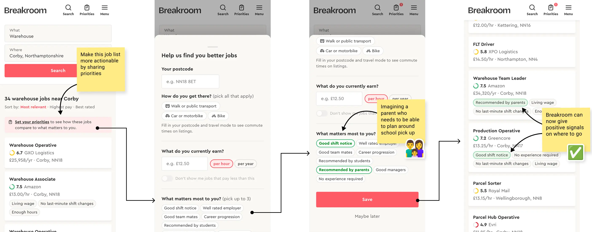
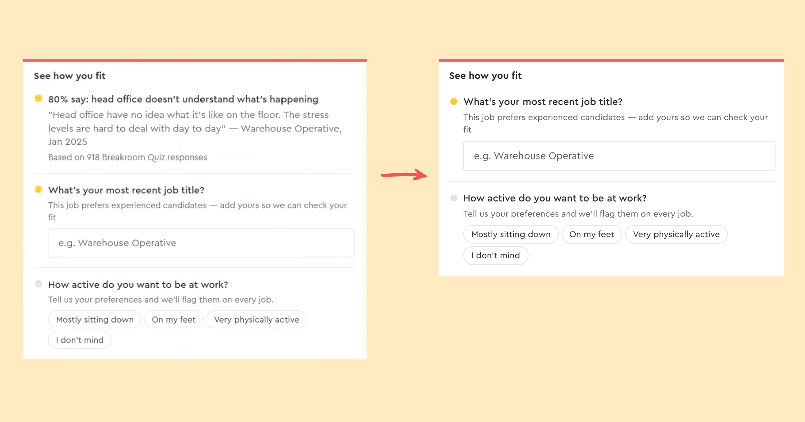
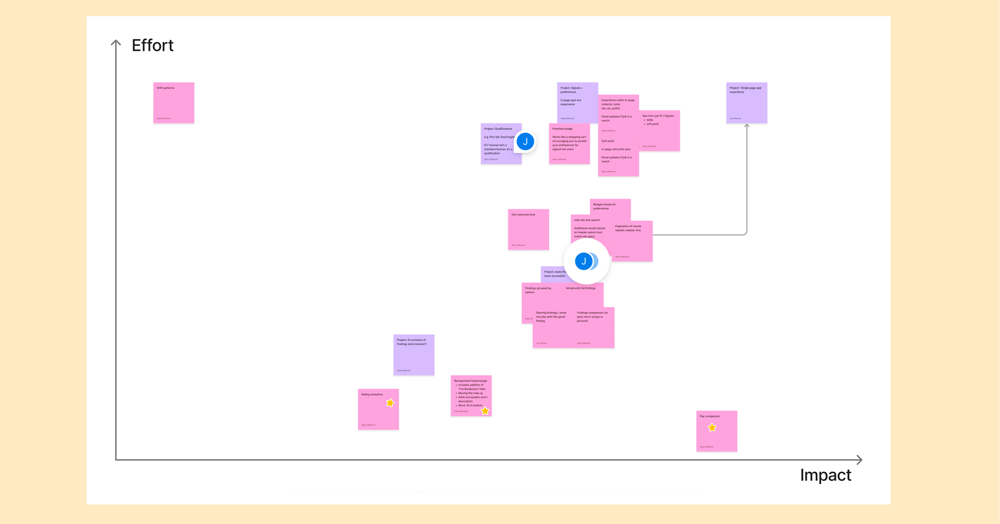

Brief
Why this project existed
We hypothesised that frontline workers arriving at Breakroom job listings from organic search were facing information overload, struggling to decide whether to apply, or quickly find a better alternative.
How we measured success
- SUS usability score above 68 (exceptional: above 80)
- Time to find an alternative role 30% faster than on Breakroom or Indeed
My role
I built the prototype collaboratively with a colleague, both of us pushing changes to a shared repo using Claude Code. I then owned the research end-to-end: using AI to generate a three-part research plan, running Phase A using UserBrain, and Phase B fully set up in Maze before the project was cancelled.
The problem
Breakroom is a job platform for frontline workers across retail, hospitality, logistics, and care. These users are often time-poor, browsing on mobile, making quick decisions about whether a job is worth their time. Our vacancy pages weren't set up to help them do that.
The core issue was information overload. Job descriptions that nobody likes to read but might contain something critical. Breakroom findings all displayed with equal weight. Too many accordions to open, no signal about where to start.
You can expand my full annotation of what was wrong with the old page below:
How I approached it
The first move was building something testable fast. Rather than waiting for engineering time, I used Claude Code to build a working, interactive prototype, collaborating with a colleague on a shared repo. This let us get a realistic redesign in front of real users within days, not weeks, and meant research could start before any production work began.
The prototype focused on two things: making the decision to apply feel confident and clear, and making it quicker to find a better alternative when a job isn't right.
The redesigned vacancy page
The redesign made some marked improvements in reducing cognitive load.
- Key information from the job description is pulled out and placed within the key info section, so you can understand at a glance what the hours are like.
- Using our pay data, Breakroom can tell you if the pay is reasonable for your location.
- It's very clear if the position requires or prefers a specific qualification, or a length of time in service.
If any of those things don't fit, it's easy to twist onto something else, because the options on the left highlight jobs that pay more by default, and the user can add their own personalisation for things that matter most to them, e.g. jobs that are good for students, or jobs with highly rated managers.
Take a look at the initial redesign, with annotations below:
And for a more detailed walkthrough of some of the interaction flows, see below:
See the experience personalisation flow
Users can add their previous experience to personalise the signals they see. This is intended to get people more excited about jobs they are qualified for, but it's also about directing people away from jobs they aren't qualified for.
This feature helps employers get fewer Breakroom applicants that aren't right for the job, because it's easier for a job-seeker to self-select out where appropriate.

See the user priorities personalisation flow
I needed to make the twist decision much easier for a user to make, but for new, organic users landing on Breakroom for the first time, we don't know which of our Breakroom findings really matter to them. I added this method to get users to tell us, and their choice is reflected in the job cards they see.
Some cards become more appealing than others, because they relay the findings that matter most to the individual job-seeker, and the user doesn't have to go digging to find it.

Testing
Now we had something real to test, so I designed a three-study mixed-methods research plan:
| Study | What it is | Tool | Participants |
|---|---|---|---|
| A: Explore | Unmoderated video sessions: how people actually use the prototype | UserBrain | 6-8 people |
| B: Compare | Quantitative comparison: prototype vs breakroom.cc vs Indeed | Maze | 90 people (30 per condition) |
| C: Validate | Second video round to confirm findings and capture highlight clips | UserBrain | 8-10 people |
Phase A findings
Across six sessions, response to the prototype was consistently enthusiastic. Testers described it as unlike anything they'd seen on existing job site. The Breakroom Take, pay comparison, and employee-first framing drew the strongest reactions.
"this [pay comparison] part is so immensely helpful. [commute time] is helpful too because I can easily check 'okay it takes too long to get there I don't want this job', and I like that you can set your priorities, I love it."
— Eleonora
"I think the Breakroom Take is just such a good feature, and that's just the type of insight that you really need before you apply for a job, to me that's the gold in it all."
— Joanne
One usability challenge remained: four testers independently flagged the page as dense or overwhelming on first encounter. This is a problem that comes up a lot for me when designing with Claude, I really need to be quite specific about adding breathing room between sections. Annoying, but easy to fix. I simply adding more spacing between sections.
A second issue also emerged around personalisation. Users were unsure what effect setting their preferences would actually have, so I went through and updated some of the copy around the personalisation, and actually removed some of the avenues in that seems to trip people up the most.
Iterating before Phase B
Phase A gave me enough to act on without waiting for a full analysis. I time-boxed half a day to make targeted hierarchy changes to the prototype. Not a big redesign, just the most obvious friction points addressed. The goal was to give Phase B's quantitative comparison a fairer shot.

One of the quick targeted changes made after Phase A, to reduce weight overall and keep this section to a tighter focus for better scanability.
Translating research to the roadmap
With Phase A's signal established, I worked with our Principal Software Engineer and Product Manager to map the prototype into a prioritised delivery roadmap.
I broke it into components, ran an impact/effort exercise with the team, and together we identified pay insights as the clear first build. Highest impact, lowest effort, and uniquely it could be added to existing vacancy pages without requiring the new layout. That made it a standalone quick win.

Our Figjam to determine the most impactful feature we could build quickly
Where it stopped
Phase A ran to completion, and I'd fully set up Phase B in Maze, with task flows built for each condition, and the participant pool being assembled via User Interviews. The project was unfortunately cancelled due to a team restructure.
Projects get cut, it's frustrating, but working in startups has taught me how to deal with fast-changing environments and reacting quickly to changes in focus. It's something I've learned to be resilient for.
I'm still immensely proud of the validated qualitative findings, the speed at which we generated a fully interactive prototype, and a prioritised roadmap.
What I'd do differently
With hindsight, we probably could have run Phase B in parallel with Phase A rather than sequentially. We wouldn't have been able to make those timeboxed changes, but we would have gained the ability to get qualitative AND quantitative data simultaneously to produce richer findings faster, and a stronger internal case for continuing.
I'd also consider a smaller Phase B sample to start, quicker to run, enough to demonstrate proof of concept, and a better hook for stakeholder buy-in before committing to the full study.
Try it for yourself
The full prototype is available here for you to try out the job discovery and personalisation features.
Try the prototype